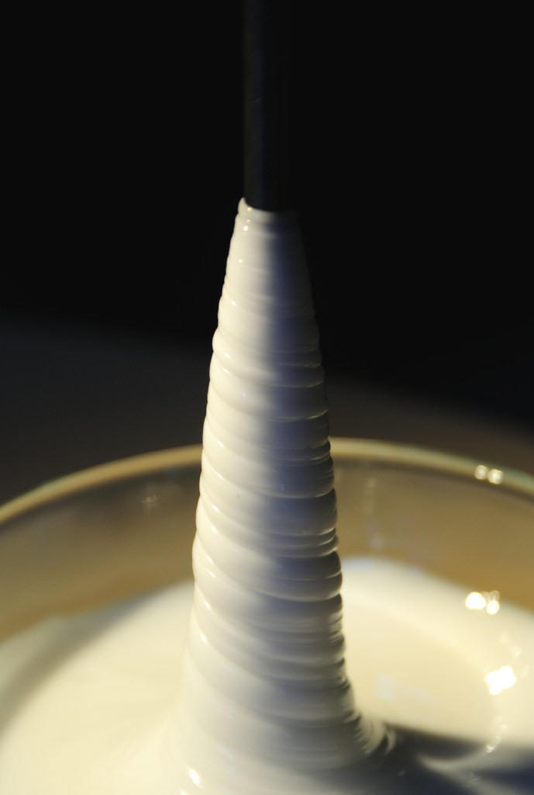
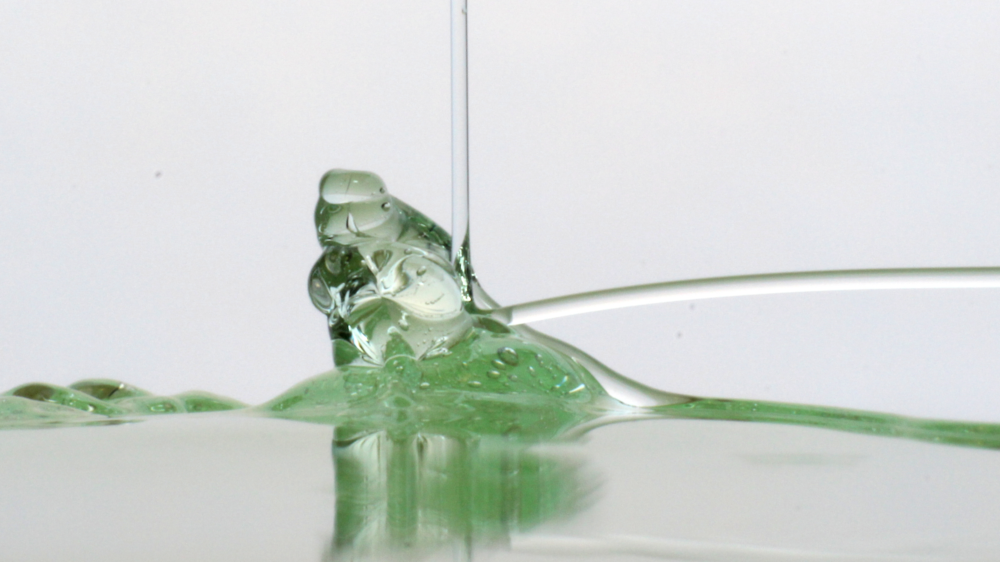
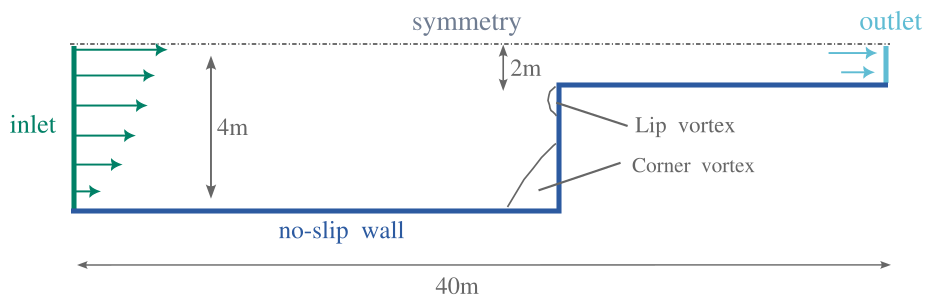
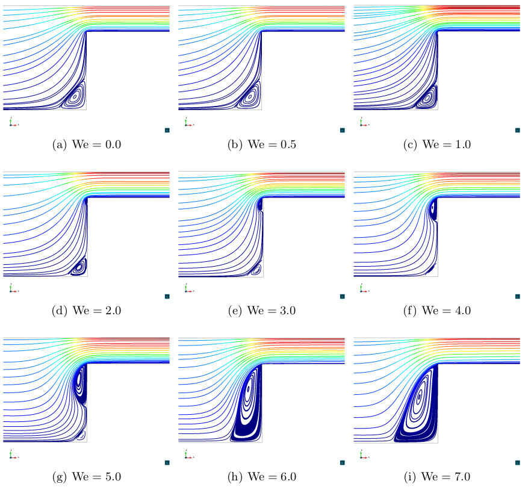
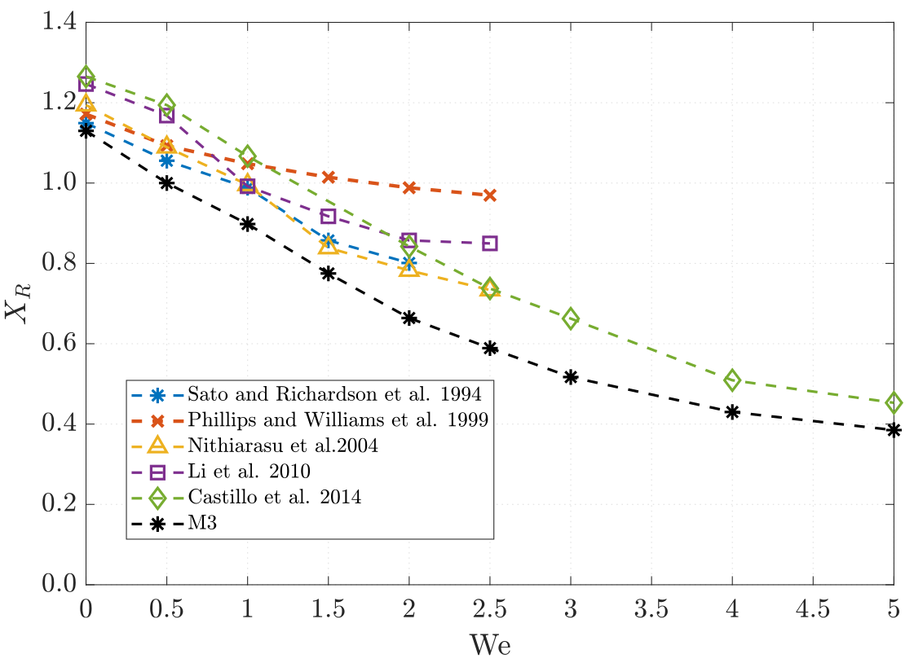

Viscoelastic Fluid Flows
1 Table of contents
🔬 Key Topics:
2 Overview
2.1 The challenges of simulating viscoelastic flows
Viscoelastic fluids are a class of non-Newtonian materials that exhibit both viscous (frictional, dissipative) and elastic (energy-storing, memory-retaining) behaviors. This unique combination stems from their complex internal microstructure, which leads to memory effects:
The current stress state depends not only on the present deformation but also on the entire flow history.
To accurately model these fluids, one must go beyond the classical Navier–Stokes equations and employ nonlinear constitutive equations. This complexity makes the numerical simulation of viscoelastic fluid flows especially challenging, particularly at high Weissenberg numbers, which correspond to flows dominated by elastic effects.


This is in fact one of the biggest challenges in computational rheology, dating back to the 1970s called High Weissenberg Number Problem (HWNP). At that time, all methods were observed to break down at relatively low Weissenberg numbers. For approximately 30 years, this breakdown was believed to be a purely numerical phenomenon.
This research area started from my PhD work and focuses on the numerical simulation of these complex flows using the Finite Element Method (FEM). The goal is to develop stable and accurate numerical techniques to better understand and predict the behavior of viscoelastic fluids with high elasticity across a wide range of applications, from industrial processes to biological systems.
The numerical developments were implemented in the in-house FEM code Femuss. The code allows for modular addition of constitutive models, solver schemes, and stabilization techniques.
2.2 Modelling of polymeric fluid flows
While Newtonian fluids can be modeled using only the Navier–Stokes equations (which include the momentum and continuity equations), modeling viscoelastic fluid flows requires a nonlinear constitutive equation to properly capture the elastic behavior of the fluid.
where the unknowns are the velocity \(\boldsymbol{u}\), pressure \(p\) and the extra stress tensor \(\boldsymbol{\sigma}\). The Deviatoric stress tensor is denoted by \(\mathbf{T}\), \(\eta_p\) is the polymer viscosity coefficient and \(\lambda\) is the relaxation time. The expression of \(\mathfrak{h}(\boldsymbol{\sigma})\) depends on the model chosen. In general \(\mathfrak{h}(\boldsymbol{\sigma})=0\), which corresponds to the Oldroyd-B model.
Also, note that \(\mathbf{T}\) adopts different forms, depending of the fluid flow to simulate:
Newtonian viscous fluids: \(\mathbf{T} = 2 \eta \nabla^s \boldsymbol{u}\)
Polymeric fluids: \(\mathbf{T} = 2 \eta_s \nabla^s \boldsymbol{u} + \boldsymbol{\sigma}\)
where \(\eta_s\) is the solvent viscosity for viscoelastic fluid flows. Note that \(\eta_s+\eta_p=\eta\), that is the usual viscosity employed for Newtonian fluids.
2.3 The Weissenberg Number
The Weissenberg number (We) is a dimensionless quantity that compares elastic and viscous effects in viscoelastic fluid flows. It is defined as:
\[ \mathrm{We} = \frac{\lambda U}{L} \]
Where \(\lambda\) is relaxation time, \(U\) is the characteristic velocity and \(L\) characteristic length.
The physical interpretation is:
- If \(\mathrm{We}\) is small: Viscous effects dominate, elastic behavior is negligible.
- If \(\mathrm{We}\) is large (typically \(\mathrm{We} > 1\)): Elastic effects become significant, leading to complex flow behavior and numerical difficulties.
2.4 Weak Formulation
The weak form of the problem consists in finding \(\boldsymbol{U} = [\boldsymbol{u}, p, \boldsymbol{\sigma}] : ]0, t_{\rm f}[ \longrightarrow \boldsymbol{\mathcal{X}} := \boldsymbol{\mathcal{V}}_0 \times \boldsymbol{\mathcal{Q}} \times \boldsymbol{\Upsilon}\), such that the initial conditions are satisfied and:
\[ \left(\rho \dfrac{\partial \boldsymbol{u}}{\partial t}, \boldsymbol{v}\right) + (\boldsymbol{\sigma}, \nabla^{s} \boldsymbol{v}) + 2 (\eta_{s} \nabla^{s} \boldsymbol{u}, \nabla^{s} \boldsymbol{v}) + \langle \rho \boldsymbol{u} \cdot \nabla \boldsymbol{u}, \boldsymbol{v} \rangle - (p, \nabla \cdot \boldsymbol{v}) = \langle \boldsymbol{f}, \boldsymbol{v} \rangle, \] \[ (q, \nabla \cdot \boldsymbol{u}) = 0, \] \[ \dfrac{1}{2 \eta_{p}} (\boldsymbol{\sigma}, \boldsymbol{\chi}) - (\nabla^{s} \boldsymbol{u}, \boldsymbol{\chi}) + \dfrac{\lambda}{2 \eta_{p}} \left( \dfrac{\partial \boldsymbol{\sigma}}{\partial t} + \boldsymbol{u} \cdot \nabla \boldsymbol{\sigma} - \boldsymbol{\sigma} \cdot \nabla \boldsymbol{u} - (\nabla \boldsymbol{u})^{T} \cdot \boldsymbol{\sigma}, \boldsymbol{\chi} \right) = 0, \]
for all \(\boldsymbol{V} = [\boldsymbol{v}, q, \boldsymbol{\chi}] \in \boldsymbol{\mathcal{X}}\), where it is assumed that \(\boldsymbol{f}\) is such that \(\langle \boldsymbol{f}, \boldsymbol{v} \rangle\) is well defined.
In compact form, the problem can be written as:
\[ \mathcal{G}(\boldsymbol{U}, \boldsymbol{V}) + B(\boldsymbol{u}; \boldsymbol{U}, \boldsymbol{V}) = L(\boldsymbol{V}),\]
for all \(\boldsymbol{V} \in \boldsymbol{\mathcal{X}}\), where:
\(\mathcal{G}(\boldsymbol{U}, \boldsymbol{V}) = \left(\rho \dfrac{\partial \boldsymbol{u}}{\partial t}, \boldsymbol{v}\right) + \dfrac{\lambda}{2 \eta_{0}} \left(\dfrac{\partial \boldsymbol{\sigma}}{\partial t}, \boldsymbol{\chi} \right),\)
\(\begin{aligned} B(\hat{\boldsymbol{u}}; \boldsymbol{U}, \boldsymbol{V}) =\ & 2 (\eta_{s} \nabla^{s} \boldsymbol{u}, \nabla^{s} \boldsymbol{v}) + \langle \rho \hat{\boldsymbol{u}} \cdot \nabla \boldsymbol{u}, \boldsymbol{v} \rangle + (\boldsymbol{\sigma}, \nabla^{s} \boldsymbol{v}) \\ & - (p, \nabla \cdot \boldsymbol{v}) + (q, \nabla \cdot \boldsymbol{u}) + \dfrac{1}{2 \eta_{p}} (\boldsymbol{\sigma}, \boldsymbol{\chi}) - (\nabla^{s} \boldsymbol{u}, \boldsymbol{\chi}) \\ & + \dfrac{\lambda}{2 \eta_{p}} \left( \hat{\boldsymbol{u}} \cdot \nabla \boldsymbol{\sigma} - \boldsymbol{\sigma} \cdot \nabla \hat{\boldsymbol{u}} - (\nabla \hat{\boldsymbol{u}})^{T} \cdot \boldsymbol{\sigma}, \boldsymbol{\chi} \right), \end{aligned}\)
\(L(\boldsymbol{V}) = \langle \boldsymbol{f}, \boldsymbol{v} \rangle.\)
2.5 Spatial discretization using the Finite Element Method
The Galerkin finite element method consists in seeking an approximate solution within a finite-dimensional subspace of the original infinite-dimensional function space. Given a weak formulation of the problem, the solution is approximated by projecting it onto a finite element space constructed from piecewise polynomial basis functions defined over a mesh of the computational domain.
In this framework, the trial and test functions are chosen from the same finite element space, ensuring consistency and stability under appropriate conditions.
In general, the finite element partition of the domain \(\Omega\) is denoted by \(\mathcal{T}_{h} = \{K\}\). Likewise, the diameter of an element \(K \in \mathcal{T}_{h}\) is denoted by \(h_{K}\), and the diameter of the partition is defined as \(h = \max\{h_{K} \mid K \in \mathcal{T}_{h}\}.\) From \(\mathcal{T}_{h}\) we construct conforming finite element spaces for the velocity, the pressure, and the elastic stress: \(\boldsymbol{\mathcal{V}}_{h} \subset \boldsymbol{\mathcal{V}}\), \(\mathcal{Q}_{h} \subset \mathcal{Q}\), and \(\boldsymbol{\Upsilon}_{h} \subset \boldsymbol{\Upsilon}\), respectively.
Therefore, defining \(\boldsymbol{\mathcal{X}}_{h} := \boldsymbol{\mathcal{V}}_{h} \times \mathcal{Q}_{h} \times \boldsymbol{\Upsilon}_{h},\) the Galerkin finite element approximation of the standard problem consists in finding \(\boldsymbol{U}_{h} : ]0, t_{\mathrm{f}}[ \longrightarrow \boldsymbol{\mathcal{X}}_{h},\) such that:
\[ \underbrace{\mathcal{G}(\boldsymbol{U}_{h}, \boldsymbol{V}_{h})}_{\text{Temporal terms}} + \underbrace{B(\boldsymbol{u}_{h}; \boldsymbol{U}_{h}, \boldsymbol{V}_{h})}_{\text{Bilinear form}} = L(\boldsymbol{V}_{h}), \]
for all \(\boldsymbol{V}_{h} \in \boldsymbol{\mathcal{X}}_{h}\).
The resulting system is a set of algebraic equations that can be efficiently solved using numerical linear algebra techniques.
2.6 Stabilization
In incompressible flow problems, using equal-order interpolation for velocity and pressure in finite element methods often leads to numerical instabilities due to the violation of the inf-sup (or Ladyzhenskaya–Babuška–Brezzi) condition. This condition is essential to ensure the well-posedness of the continuous and discrete problems, namely the existence and uniqueness of the solution.
To address this, stabilization techniques are introduced, modifying the formulation slightly to recover stability without compromising accuracy. Among the various available strategies, we adopt the Variational Multiscale (VMS) method. VMS techniques are robust, residual-based, and provide a systematic framework that enhances stability and ensures mesh-convergent solutions.
The key idea in Variational Multiscale Methods (VMS) is to decompose the solution and test space into coarse (resolved) and fine (unresolved) scales: \[ \boldsymbol{U} = \boldsymbol{U}_h + \boldsymbol{U}', \quad \boldsymbol{V} = \boldsymbol{V}_h + \boldsymbol{V}', \] where \(\boldsymbol{U}_h, \boldsymbol{V}_h \in \boldsymbol{\mathcal{X}}_{h}\) (finite-dimensional space), and \(\boldsymbol{U}', \boldsymbol{V}' \in \boldsymbol{\mathcal{X}}'\) (the complementary fine-scale space).
Inserting the decomposition into the variational formulation and requiring it to hold for all \(\boldsymbol{V}_h \in \boldsymbol{\mathcal{X}}_{h}\) and \(\boldsymbol{V}' \in \boldsymbol{\mathcal{X}}'\), we obtain a coupled system for the resolved and unresolved scales. Then, the fine scales \(\boldsymbol{U}'\) are approximated (typically in terms of the residual of the coarse-scale equation), leading to a modified coarse-scale problem of the form: \[ \mathcal{G}(\boldsymbol{U}_{h}, \boldsymbol{V}_{h})+B(\boldsymbol{u}_h;\boldsymbol{U}_h, \boldsymbol{V}_h) + S(\boldsymbol{U}_h, \boldsymbol{V}_h) = L(\boldsymbol{V}_h) \quad \forall \boldsymbol{V}_h \in \boldsymbol{\mathcal{X}}_{h}, \] where the stabilization operator \(S(\cdot, \cdot)\) accounts for the effect of the unresolved scales.
This framework provides a systematic and physically motivated way to derive stabilized formulations, especially effective for problems with dominant advection or incompressibility constraints.
3 Logarithmic Conformation Reformulation
📄 Moreno, L., Codina, R., Baiges, J., & Castillo, E. (2019).
Logarithmic conformation reformulation in viscoelastic flow problems approximated by a VMS-type stabilized finite element formulation.[Post-print]
Computer Methods in Applied Mechanics and Engineering, 354, 706–731.
DOI: 10.1016/j.cma.2019.06.001
3.1 Main Concepts
As mentioned in the overview, one of the main challenges in computational rheology is the simulation of viscoelastic fluid flows at high elasticity. This issue, commonly referred to as the High Weissenberg Number Problem (HWNP), severely limits the range of applicability of numerical methods in viscoelastic flow simulations.
In 2004, Fattal and Kupferman provided a key insight by identifying two main sources of instability associated with this problem:
Inadequate approximations for representing the polymeric stress tensor, which can lead to unphysical results or numerical blow-up.
The requirement to preserve the positive-definiteness of the conformation tensor. This tensor, denoted by \[ \boldsymbol{\tau} = \lambda \dfrac{\boldsymbol{\sigma}}{\eta_p} + \mathbf{I} \] must remain positive-definite to ensure physically meaningful solutions. However, standard discretization techniques may violate this condition, leading to instabilities in the numerical simulation.
These findings laid the groundwork for the development of more robust numerical schemes, such as the Log-conformation Reformulation (LCR), which aim to overcome these difficulties by reformulating the constitutive equations in a way that inherently preserves the mathematical and physical properties of the model. Therefore, Fattal and Kupferman proposed a reformulation that is essentially a change of variables. The original formulation by Fattal and Kupferman considers the next transformation:
\[ \boldsymbol{\psi} = \log\left( \dfrac{\lambda \boldsymbol{\sigma}}{\eta_p} + \mathbf{I} \right) \] This change of variables ensure the conformation tensor remains physically admissible, which requires it to be symmetric and positive-definite at all times.
Following this important discovery, we apply the same change of variables, with some modifications to suit our model:
\[ \boldsymbol{\psi} = \log\left(\boldsymbol{\tau}\right) = \log\left( \dfrac{\lambda_0 \boldsymbol{\sigma}}{\eta_p} + \mathbf{I} \right) \quad \longrightarrow \quad \boldsymbol{\sigma} = \dfrac{\eta_p}{\lambda_0} \left( \exp(\boldsymbol{\psi}) - \mathbf{I} \right) \]
where, \(\lambda_0 = \max\{k\lambda, \lambda_{0,\min}\}\).
Note: Unlike the original change of variables, our formulation is non-singular when the Weissenberg number \(\mathrm{We}\) tends to zero, avoiding potential numerical issues in this limit.
By substituting this reformulated variable \(\boldsymbol{\psi}\) into the original governing equations, we obtain a new system of equations where the primary unknowns are the velocity \(\boldsymbol{u}\), the pressure \(p\), and the transformed tensor \(\boldsymbol{\psi}\).
Considering this new system, we develop a Variational Multiscale (VMS) stabilization strategy for stabilize the reformulated problem. Moreover, we design a “split” type stabilization method, which focuses on the essential terms necessary to stabilize the problem efficiently, while still achieving optimal convergence rates.
This approach significantly improves the robustness and accuracy of the numerical simulations for viscoelastic flows at high Weissenberg numbers.
3.2 Numerical Result
Contraction 4:1
This benchmark is widely used to test the performance of numerical methods in viscoelastic fluid simulations. It features a planar channel with a 4:1 contraction, which produces strong elastic effects at high Weissenberg numbers. The goal is to evaluate the stability and accuracy of the numerical approach under demanding flow conditions, and to compare the results with reference data from the literature.

The following images show the streamlines of the fluid flow inside the channel. Before diving into the explanations, I’d like to apologize to the reader for the terrible color choices. I have no excuse… but in my defense, I was in the first year of my PhD! That said, it’s important to clarify that the problem has a stationary solution. Each image corresponds to a different simulation with a different fluid, but all of them share the same Reynolds number, Re = 1.
Recall that the Weissenberg number (We) indicates the elasticity of the fluid flow. The image labeled We = 0 corresponds to a viscous Newtonian fluid with no elasticity. As the Weissenberg number increases, we can observe how the behavior of the streamlines changes for each elastic fluid. This study allows us to analyze the length and shape of the vortex across different elastic regimes.
Beyond capturing the expected behavior, one key point should be highlighted: standard formulations (i.e., without any change of variables) typically struggle to simulate beyond We = 2.5. In contrast, our formulation (combined, of course, with the developed stabilization strategy) demonstrates robustness in simulating highly elastic flows, which was the main goal of this work.

Finally, the size of the bottom corner vortex is compared with results from the literature for fluids with We ≤ 5. M3 indicates the results obtained in this study (for more details, feel free to check out the paper 🙂).

3.3 Conclusions
To sum up, the method (change of variables + VMS stabilization developed) shows good agreement with the literature, performs robustly for high Weissenberg numbers, and captures the main features of the flow. Not bad for a first PhD paper, right? 😄
4 Thermal Coupling
Explored the interaction between viscoelastic stress and temperature fields, particularly relevant in processes involving polymer melts.
- Developed a coupled thermo-viscoelastic formulation.
- Demonstrated effects on stress profiles and flow behavior.
5 Time-dependent subgrid-scales
6 Purely elastic inestability and Fractional Step Methods
A fractional-step scheme was developed to decouple the computation of velocity, pressure, and stress fields. This technique improves solver robustness and allows more flexibility in time integration.
- Tested both semi-implicit and fully implicit schemes.
- Applied to various constitutive models (Oldroyd-B, Giesekus…).
7 Fluid-Structure Interaction
8 Numerical Analysis
This research line formed the core of my PhD thesis, defended at the Universitat Politècnica de Catalunya (UPC).